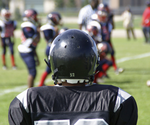
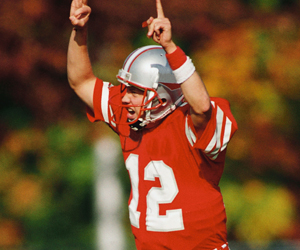

Aim for the End Zone: Football Basics
In This Article: Basic Summer Football Skills Summer Football Conditioning Equipment
Warm weather and the longer days are the ideal time to learn basic football skills, practice your assigned position and engage in personal conditioning ahead of organized workouts and scrimmages.
1. Basic Summer Football Skills
Throwing the Basic Spiral
Find a grip on the football that feels natural and leave just a little space between your hand and the ball. Next, hold the ball at chest level, with your feet shoulder-width apart. As you bring your throwing arm straight back, elbow above your shoulder, step forward on your lead leg (the one that is closest to the target). With your back leg moving forward, throw the ball over-handed and release, with your index finger being the last thing to touch the ball. Your throwing fingers are the key to the spiral.
Catching the Ball
To avoid dropping the ball or creating an interception, always remember to bring the pass into your hands first. Don’t catch the football with your body. Catch the ball out with your hands and after you have secured it, use your body to cradle and protect the ball, as you move forward toward the goal line.
Punting
Grip the ball with your dominant hand as if you were giving a handshake, nestling it between your thumb and fingers. Extend your arm forward as far as you can.
Hold the ball horizontally, laces up. Angle the nose pointing slightly to your left (or to your right if you're left-handed). Starting with your kicking foot, take two steps forward to build momentum, and then swing your foot out to meet your hand. Make contact with the ball as late as you can so you're almost kicking it straight out of your fingers.
2. Summer Football Conditioning
The best thing you can do to get in top football condition is to play football. Of course, playing all year would be too much stress on the body. But you can simulate the game and get much of the same benefit. Conditioning builds the kind of mental toughness that has you making the big tackle when everyone else is tired in the fourth quarter.
Skill Positions
For skill players conditioning becomes more diverse and intricate. These players need to be able to run distances of up to 100 yards, change direction, move backwards and change speeds.
Linemen
Asking a lineman weighing 250 pounds or more to run long distances and jump all over the place is counter-productive. Most linemen on any given play only move about ten yards. They also use more force and power then any other position. Using short area sprints and drills for linemen is the primary mode of training to follow. Use these methods for linemen to achieve a high level of conditioning.
For linemen, one of the biggest complaints is that they don’t have options to build skills and condition in the off-season, especially when they aren’t in the school weight room. Enter simulated game conditioning. This works best with a partner, but it can be performed alone as well. If you have a partner, one person should line up as the offensive lineman and the other as the defensive lineman. Line up in a good stance, take one of your steps (base right, pull left, etc), and sprint for a short to medium distance. Walk back and repeat.
Hill Sprints
If you can find a fairly good hill with a nice incline, you have an instant conditioning machine. Hill sprints are great because they never allow you to go full speed, which will save a runner from pulling a hamstring while conditioning. Having them run uphill can allow them to work on form and get conditioned at the same time.
If you have a hill that’s roughly a 30–40-yard run, you can start off with eight good sprints and work up to 12. Running hills is flat out hard and builds as much mental toughness as it does physical toughness. Sprint up the hill, walk down, and repeat. Keep the rest periods short.
The funny thing about football conditioning drills is that while you may dread the lead up to them, after you are done it will feel good pushing your body further than you think it can go. The conditioning will pay off. Being in prime physical condition allows you to go all out on each snap for the entire four quarters.
3. Equipment
Finding the Right Football Cleat
Football cleats provide added grip and traction on the field, whether playing on grass or turf, and they can help to protect a player’s feet and ankles when making quick changes in direction and moving at great speed.
There are a few brands of football cleats that are considered to be more popular due to their level of comfort, their unique design, and their ability to provide increased grip and control. Often the measure of performance of a particular brand of football cleat comes down to personal preference: how the cleat feels, how secure the player feels in it, and how comfortable the cleat is throughout the length of the game.
Care and Storage of Mouthguards
Mouthguards reduce the likelihood of dental injuries. However, they can increase the chance and intensity of mouth cuts, abrasions, and infection. To prevent this, they should be sanitized daily and replaced every two weeks, or when they develop sharp or jagged edges.
Mouthguards should be sanitized on a daily basis using a commercially available antimicrobial denture-cleansing solution. You can also save time and purchase an inexpensive anti-microbial mouthguard case, that is heavy-duty, ventilated for fast drying, and provides secure and clean storage for your mouthguard.
Reduce Injury and Speed Recovery with Compression Socks
Compression socks help heal strains, muscle pulls and other injuries commonly associated with football. They are ideal for reducing swelling and channeling fluid up and out of the lower legs. Clinical studies show football players who wear sports compression socks on the field receive a number of benefits that can help boost their performance. The improved blood circulation in the lower legs help increase oxygen delivery to the calves, which reduces muscle oscillation and optimizes muscle alignment and efficiency while playing.
When worn after the game, compression socks play an important role in recovery by reducing delayed onset muscle soreness, flushing lactic acid from exhausted muscles and minimizing the swelling associated with exercise.
Related Articles
Resources
Other Articles
Related Categories